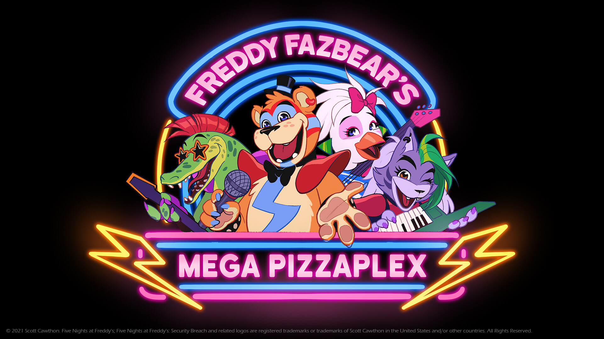

.jpg)

"Five Nights at Freddy's: Security Breach" (FNaF SB) es la novena entrega principal de la serie de juegos "Five Nights at Freddy's". Desarrollado por Steel Wool Studios y lanzado el 16 de diciembre de 2021, este juego marca una evolución significativa en la franquicia, ofreciendo una experiencia más expansiva y en 3D en comparación con los juegos anteriores.
El objetivo principal es encontrar una salida del Mega Pizzaplex mientras evitas a los animatrónicos hostiles que patrullan el lugar. A lo largo del juego, los jugadores deben completar diversas misiones y resolver acertijos para desbloquear nuevas áreas y avanzar en la historia. Los jugadores deben evitar ser atrapados por los animatrónicos y utilizar el entorno y los recursos disponibles para mantenerse a salvo. En "Five Nights at Freddy's: Security Breach" (FNaF SB), el objetivo principal es escapar del gigantesco Freddy Fazbear's Mega Pizzaplex mientras se evita a los animatrónicos hostiles que patrullan el complejo. Como Gregory, el jugador debe explorar el vasto entorno en 3D, completar misiones y resolver acertijos para desbloquear nuevas áreas y activar sistemas críticos. Con la ayuda de Glamrock Freddy y enfrentando desafíos variados, el jugador debe superar obstáculos y descubrir secretos para encontrar una salida antes de que termine la noche.
Este es un link del sitio de origen donde puede conseguir el juego original